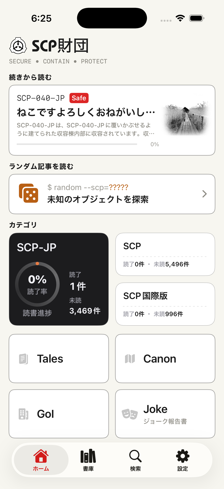
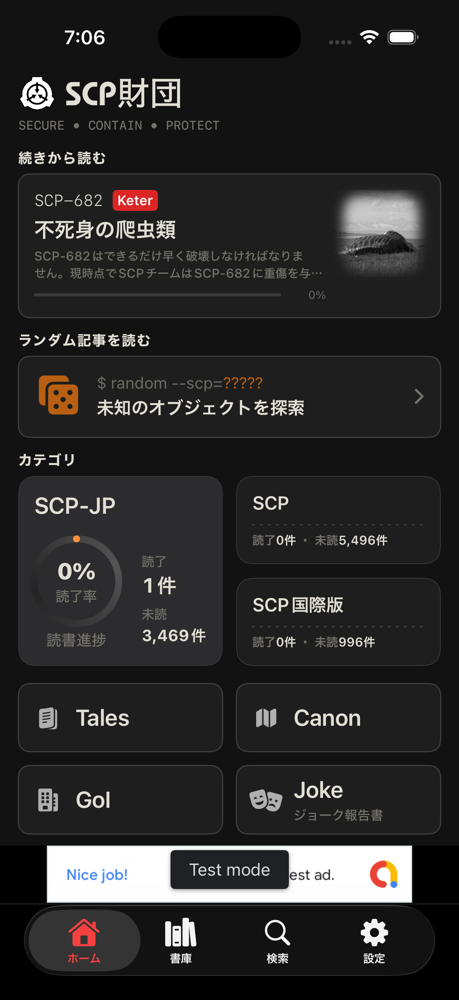

Feature Overview
読みたい報告書へ、端末の中で戻ってこられる形に
SCP Docs は、SCP 関連資料の入口、検索、読書状態をひとつのネイティブ UI にまとめる非公式ビューアです。ブラウザで長いページを追う時の小さな手間を減らし、読みかけの記事や気になった資料へ戻りやすくします。
Home
Library
Search
Reading state

Screenshots
画面の雰囲気


What it does
主な機能
Home
支部とカテゴリの入口
日本支部、英語本家、フランス支部、ロシア支部、国際ハブなどの入口をまとめ、SCP、Tales、Canon、GoI、Joke などへ移動できます。ランダム記事への導線も置いています。
Search
条件を重ねる検索
タイトルやメタ情報、タグ、オブジェクトクラスなどを組み合わせて、広いアーカイヴから読みたい記事を探しやすくします。
Library
読み返しのための書庫
お気に入り、履歴、後で読む、評価など、端末内に残る読書状態をもとに記事へ戻れる場所を用意します。
Reader
記事に集中する表示
アプリ内ブラウザ上で記事を開き、テーマや文字まわりを整えながら、本文を読みやすい状態に近づけます。